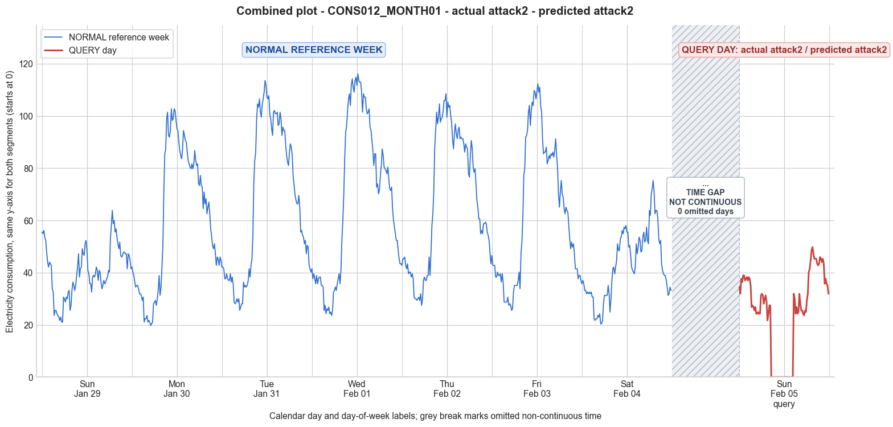

CONS012_MONTH01 · actual attack2 · predicted attack2
- Pair
- CONS012_MONTH01
- GT
- attack2
- Prediction
- attack2
- Binary GT
- attacked
- Binary Prediction
- attacked
- Source
- E010
- Parse
- stored
- Date
- 2012-02-05
- Weekday
- Sunday
- Latency
- 0.75 min
- Tokens
- 6971

Final output
Classification: Manipulated Identified Attack: - Most Likely: Attack 2 - Confidence: High - Reasoning: The query day contains a single contiguous block of 24 zero readings (6 hours), while the rest of the day shows consumption patterns that generally resemble the reference week’s morning and evening profiles, albeit with a slightly reduced magnitude. This precisely matches the description of Attack 2, which replaces consumption samples with zeros for a random duration—an on‑off attack. Attack IEEE was considered but typically produces irregular, non‑contiguous zero intervals across the full day; here the zeros are tightly clustered into one long off period. Attack 5 was also considered because it could theoretically generate low values, but the presence of exact, persistent zeros rather than small random positive values rules it out. Attack_Behavior_Explanation: - The attacker zeroed out a 6‑hour segment of the day’s 15‑minute readings, leaving all other intervals reporting actual (or near‑actual) consumption. The zero segment begins at sample 34 and ends at sample 57, completely erasing mid‑day consumption. - Impact on magnitude: The daily mean dropped from an expected ~40–43 kWh (based on similar weekdays in the reference week) to 25.19 kWh. The minimum becomes 0, while the maximum remains within normal range (49.78 kWh vs. typical peaks around 60–75 kWh). The overall energy reported is significantly reduced. - Impact on trend: The typical consumption pattern (morning peak, daytime activity, evening peak) is disrupted by the artificial flatline. The trend loses the mid‑day rise and fall, creating an unnatural “on‑off‑on” shape. - Possible technical causes: Full meter bypass for a controlled period, false data injection that selectively submits zero readings, or reverse current during the off interval.
Prompt
You are a domain expert in smart grid security and electricity theft analysis, with deep knowledge of non-technical loss (NTL) attack patterns in smart meters. You are given: 1. A plot of one week of original (normal) energy consumption for a smart meter, provided as context for the customer's typical consumption behavior. 2. A plot of one day of energy consumption for the same smart meter, which may or may not be manipulated. Below are common attack types, each defined by how consumption values are altered, their impact on magnitude and trend, and their possible technical causes. Attack 0: Generated by replacing all electricity consumption samples with zero values for the entire observation duration. Simulates a scenario where no energy usage is reported at all. May be caused by a total meter bypass or severe meter malfunction. Completely eliminates both the trend and magnitude of the consumption profile. Attack 1: Multiplies the actual energy consumption by a constant random value between (0,1). The lower the factor, the higher the severity. Can be triggered by meter bypass, magnetic interference, reverse current, and false data injection. The consumption trend remains the same but the magnitude is uniformly reduced. Attack 2: Generated by replacing consumption samples with zeros for a random duration. Also known as an on-off attack. Can be caused by full meter bypass, false data injection, and reverse current. Changes both the trend and amplitude. Attack 3: The actual consumption is multiplied by different random factors between 0 and 1, with a unique factor per sample. Similar to Attack 1 but the scaling factor varies per reading. Caused by meter bypass, magnetic interference, and reverse current. Changes both the trend and amplitude. Attack 4: Simulates energy theft over a randomly selected period within the observation window. All measurements in that period are reduced. Caused by meter bypass, magnetic interference, reverse current, and false data injection. Changes both the trend and amplitude. Attack 5: Each sample is replaced by a false value obtained by multiplying the average normal consumption by a random variable between 0 and 1, with a different variable per sample. Caused by false data injection. Produces a completely different pattern from the original consumption profile, changing both trend and magnitude. Attack 6: A random cut-off point is selected and all consumption values above it are replaced by that cut-off value. The attacker avoids exceeding a predefined maximum limit. Mainly caused by false data injection. Changes both the trend and amplitude. Attack 7: A random cut-off point is subtracted from each sample; if the result is negative, zero is reported. Similar to Attack 6 but replaces exceeding values with zero instead of the cut-off point. May be caused by false data injection or total meter bypass. Does not change the trend but reduces overall consumption. Attack 9: All samples are replaced by the average daily energy consumption, resulting in a flat constant profile. Easily detectable because constant consumption does not reflect normal customer behavior. Caused by false data injection. Eliminates all trends. Attack 10: Reverses the consumption pattern without reducing the total amount. Applicable when the electricity company uses time-varying pricing, allowing the attacker to shift high consumption to off-peak periods. Caused by false data injection. Changes the trend without decreasing total consumption. Attack 12: The attacker replaces their consumption pattern with that of a lower-consuming user. The legitimate user unknowingly pays the adversary's electricity bill. Caused by false data injection. Attack IEEE: For each 15-minute interval across the entire day, the consumer either reports the actual electricity consumption or substitutes it with zero. The result is a profile where some intervals reflect real consumption while others are zeroed out, creating an irregular pattern across the full day. May be caused by false data injection. Changes both the trend and amplitude. Given the two plots, determine: 1. Whether the day is attacked or original - compare the flagged day against the normal week and assess whether the consumption pattern is consistent with normal behavior or shows signs of manipulation. If the day is consistent with the customer's typical consumption behavior, classify it as original and provide no further analysis. If manipulation is detected, proceed to point 2. 2. Which attack type this most likely is - identify the single most probable attack and justify your choice based on how the flagged day deviates from the normal week. 3. The behavior of the identified attack - explain how the consumption values are manipulated, their impact on magnitude and trend, and the possible technical causes behind this type of attack. Output Format: Classification: - Original | Manipulated Identified Attack: (fill only if manipulated) - Most Likely: Attack X - Confidence: High | Medium | Low - Reasoning: Why it matches Attack X and why Attack Y and Attack Z were ruled out (list top 2 alternatives considered) Attack_Behavior_Explanation: (fill only if manipulated) - How consumption values are manipulated relative to the normal week - Impact on magnitude and trend - Possible technical causes
Reasoning content
We are given reference week data and query day data for a smart meter. The reference week includes 7 days (Day 0 to 6) with per-day statistics and full 96 readings per day. The query day (DAY_ID=0) has min=0.00, max=49.78, std=16.01, mean=25.19. Looking at its readings, we see a block of zeros from around index 34 to 57 (zero-based? Let's check: readings are 96 values, indexing 0-95). The zeros start at sample 34 (value 0.00) and continue until sample 57 (value 0.00), then resumes positive consumption. That's 24 zeros? Let's count: from sample 34 to 57 inclusive is 57-34+1=24 samples. 24 samples of 15 minutes = 6 hours. So there's a 6-hour block of zeros. Now, reference week days: the query day has cal_month=2, dow=6 (Sunday), dom=7. Day 0 in reference week is cal_month=1, dow=6, dom=0 (also a Sunday but earlier). Day 6 in reference week is cal_month=2, dow=5 (Saturday), dom=6. So query day is a Sunday, following Day 6 Saturday. So the normal consumption for a Sunday might be similar to Day 0 or Day 6? Actually Day 0 reference was also a Sunday (dow=6) but in a different month? Day 0: min=21.06, max=63.82, std=9.88, mean=40.58. Day 6 (Saturday): min=20.42, max=75.30, std=13.18, mean=42.96. Query day: min=0, max=49.78, mean=25.19. So mean is much lower than typical Sunday? Day 0 had mean 40.58, Day 6 (Saturday) had 42.96. So query day mean 25.19 is significantly lower. Also, there's a long zero block. Now analyze attack types. The query day shows a pattern with some normal-looking consumption before and after the zero block, but the zero block is not random small intervals; it's a continuous block of zeros. This looks like Attack 2: "Generated by replacing consumption samples with zeros for a random duration. Also known as an on-off attack." Or possibly Attack IEEE: "For each 15-minute interval across the entire day, the consumer either reports the actual electricity consumption or substitutes it with zero. The result is a profile where some intervals reflect real consumption while others are zeroed out, creating an irregular pattern across the full day." But Attack IEEE might imply random intermittent zeros throughout, not necessarily a long contiguous block. The description says "either reports the actual electricity consumption or substitutes it with zero" across the full day. It doesn't specify contiguous. Attack 2 specifically says "for a random duration" suggesting a single continuous zero period. Here we have exactly one long zero block (6 hours) and the rest looks normal-like. That fits Attack 2. Check other attacks: - Attack 0: all zero. Not. - Attack 1: multiplier constant. Not, because there's a zero block, not scaled. - Attack 3: varying multipliers, wouldn't produce exact zeros. - Attack 4: reduction over a random period, but not necessarily zero. Here it's exactly zero. - Attack 5: false values from average times random. Not zeros from actual consumption. - Attack 6: cutoff, not zeros. - Attack 7: subtract cutoff, clips at zero but may not be long contiguous zeros; would have many small non-zero values near zero. Here we have exact zeros and then normal values. - Attack 9: flat constant. No. - Attack 10: reversed pattern. No. - Attack 12: pattern from lower consumer. Would not have zero block. Attack IEEE: could be zeros intermittently, but the description says "for each 15-minute interval across the entire day, the consumer either reports the actual electricity consumption or substitutes it with zero." That could result in a contiguous zero block if the random choice clusters? But Attack 2 specifically mentions "on-off attack" with zeros for a random duration, which is more typical for a single continuous off period. Given the data has a single block of zeros, Attack 2 is the most likely. Thus, classification: Manipulated. Identified Attack: Attack 2. Confidence: High. Reasoning: The query day has a contiguous block of zeros lasting 6 hours, while the rest of the day shows consumption similar in pattern to normal days but at slightly lower magnitude. Attack 2 (on-off attack) involves zeroing out consumption for a random duration, matching this behavior. Attack IEEE could also produce zeros but typically would be more randomly distributed; the single long zero block is characteristic of Attack 2. Attack 0 is all zero, not this; Attack 5 generates random values, not zeros from actual consumption. Attack_Behavior_Explanation will describe the manipulation. Now output as per format.